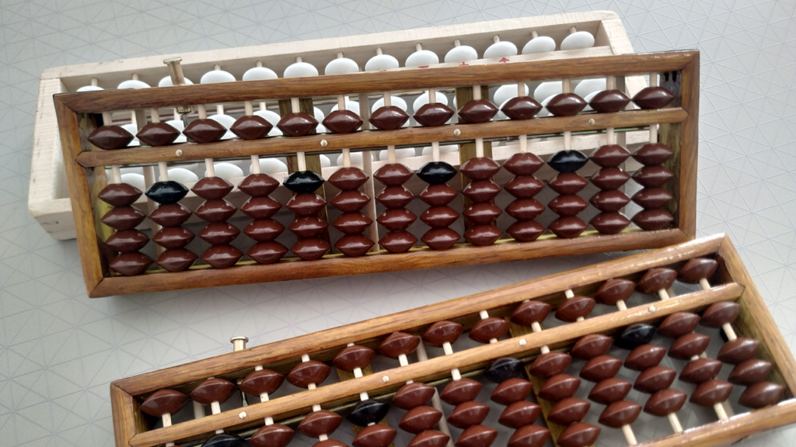
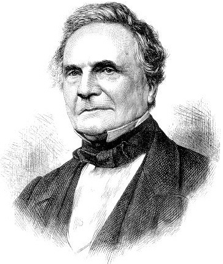
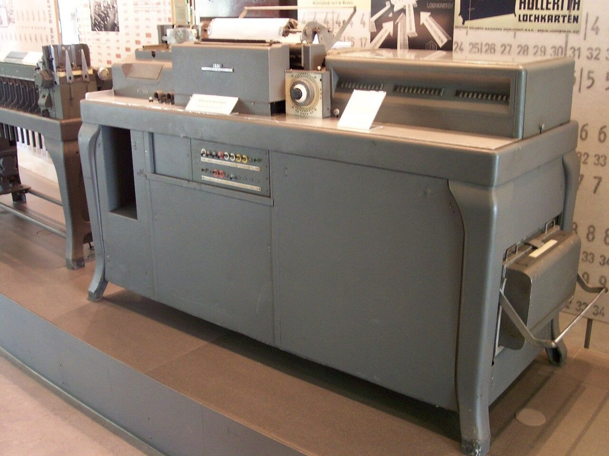
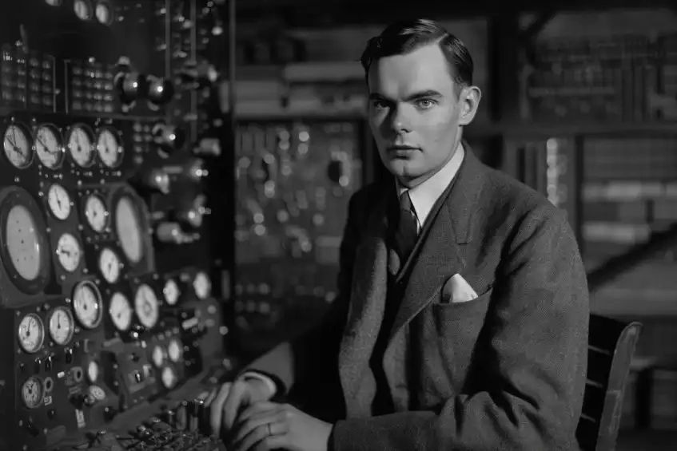
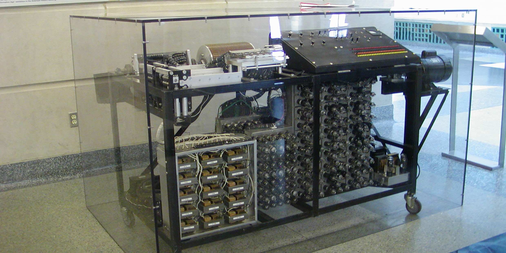
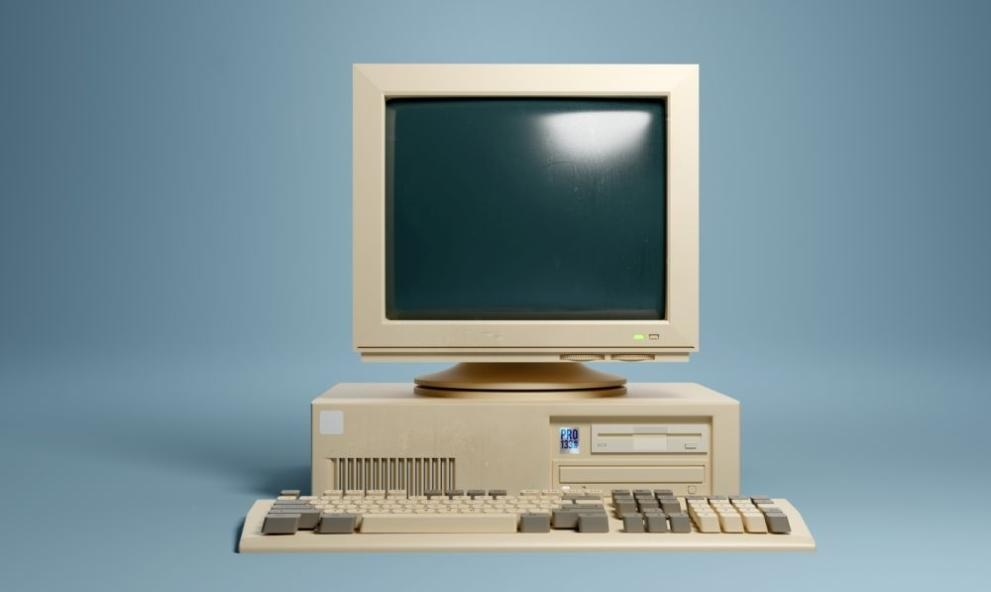
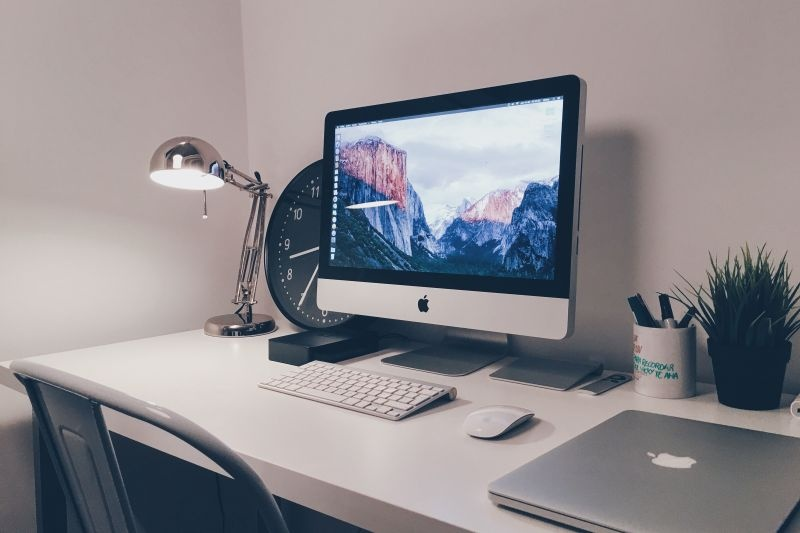

Думата „компютър" произлиза от английското compute (изчислявам) и означава устройство за извършване на сложни изчислителни дейности. Развитието на изчислителната техника преминава през четири основни етапа: Предмеханичен етап: Още в древността се появяват първите устройства за улеснение на пресмятанията – абаци (дъски с вдлъбнатини за камъчета), използвани първоначално в Индия и Египет, а през VIII в. пренесени от арабите в Испания. Механичен етап: През XVII в. Блез Паскал създава първата работеща механична сметачна машина („Паскалин"), използваща зъбни колела за събиране и изваждане. През 1673 г. Готфрид Лайбниц я усъвършенства, като добавя операциите умножение и деление и въвежда двоичната бройна система (0 и 1). През 1820 г. Шарл Колмар започва масово производство на аритмометри. Английският учен Чарлз Бабидж проектира Аналитичната машина (съдържаща склад, мелница, управление, вход и изход), а графиня Ада Лъвлейс Кинг написва първите програми за нея. Електромеханичен етап: През 1889 г. Херман Холерит създава табулатора – машина за автоматична обработка на статистически данни с перфокарти. През 30-те години Клод Шенън разработва принципите на логическото устройство на компютъра. През 1941 г. Конрад Цузе в Германия създава първата програмно управляема машина с релета (Z3), а Хауърд Айкън конструира машината MARK 1 в САЩ. Електронен етап: Между 1937 и 1939 г. американецът с български произход Джон Атанасов и неговият асистент Клифърд Бери конструират първия в света електронен компютър – ABC (Атанасов-Бери), базиран на електронновакуумни лампи и двоична система. През 1943 г. в Англия под ръководството на Алън Тюринг е създаден Colossus за разшифроване на съобщения, а през 1946 г. Джон Мочли и Джон Екерт създават първия универсален компютър – ENIAC. |
       |